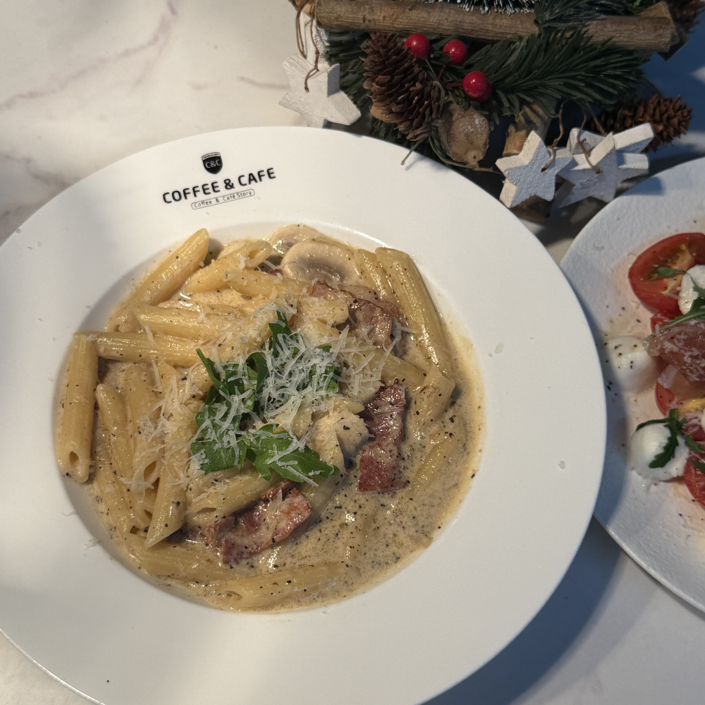
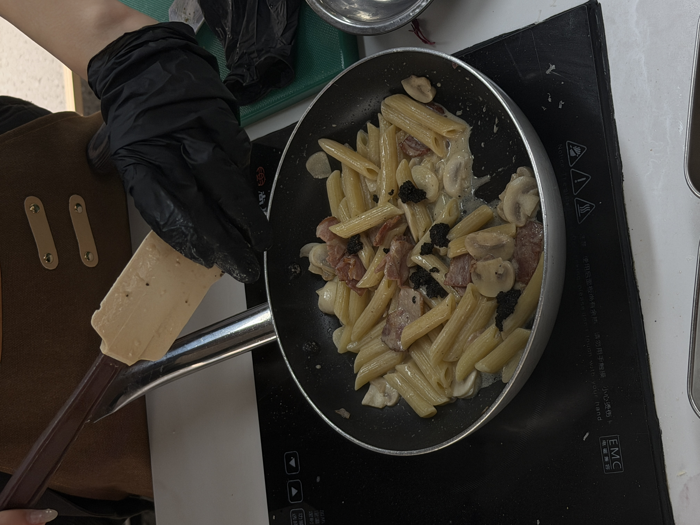

Truffle Cream Mushroom Pasta
松露奶油蘑菇培根通心粉 — Creamy truffle mushroom pasta with bacon.
Ingredients
- 2 porcini mushrooms
- 1 slice bacon
- 120 g penne pasta
- 1/4 onion
- 1 clove garlic
- 2 g truffle sauce
- 65 g light cream
- 12 g olive oil
- 3 g salt
- 2 g black pepper
- Parmesan cheese
Directions
- Slice the mushrooms and bacon.
- Chop the onion and mince the garlic.
- Cook penne pasta in boiling water for about 7 minutes. Drain and toss with olive oil.
- Sauté mushrooms, bacon, onion, and garlic in olive oil until fragrant.
- Add cream and truffle sauce, then stir well.
- Add pasta and mix evenly.
- Serve on a plate and sprinkle with Parmesan cheese.